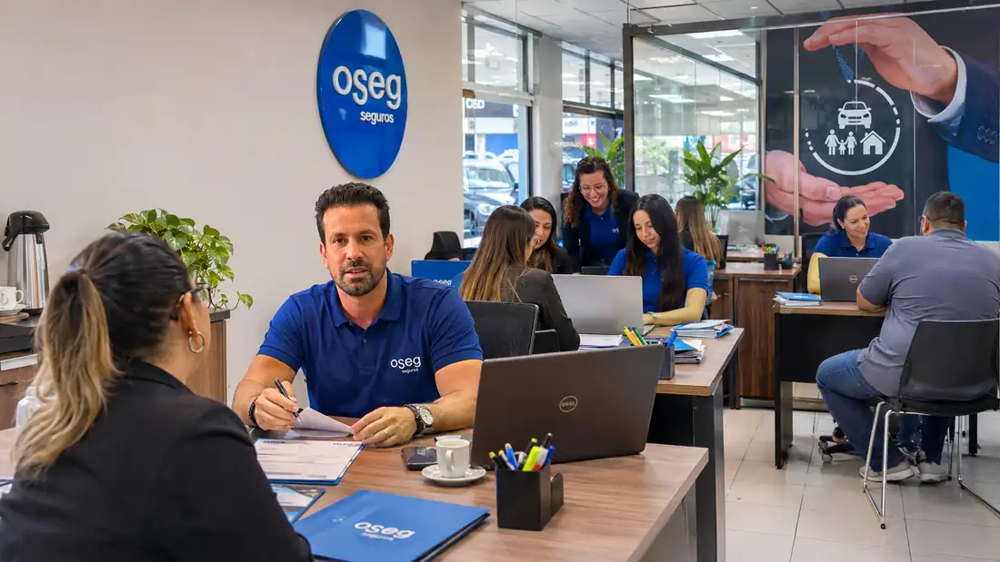
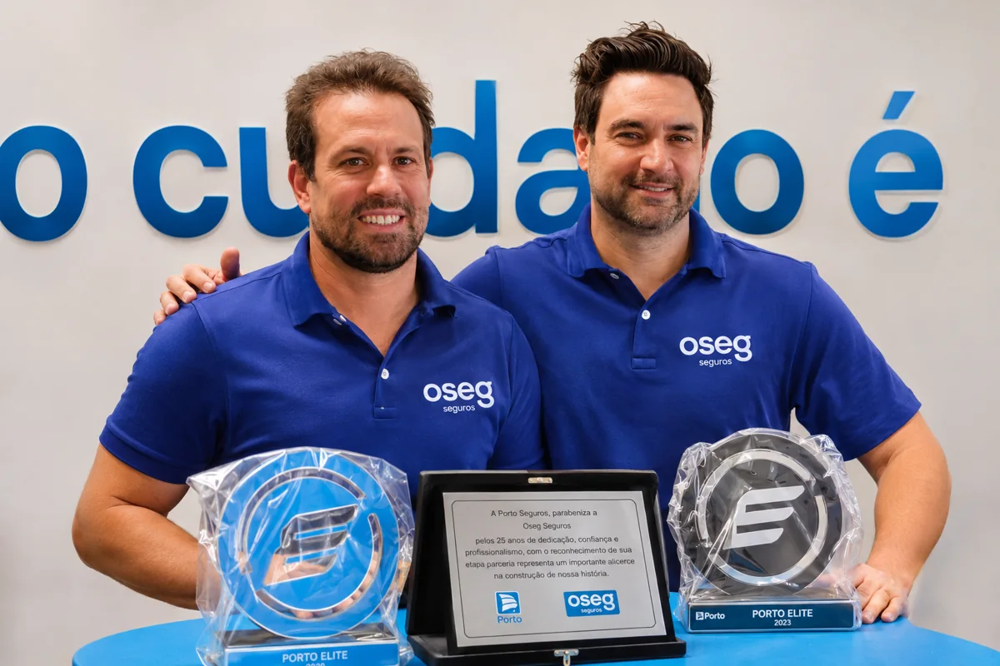

Seguro Auto
Mais tranquilidade para quem está sempre em movimento.
Seu patrimônio, sua família e seus projetos merecem mais do que uma apólice. Conte com uma equipe que entende sua necessidade e ajuda você a escolher com confiança.
Encontre as possibilidades de proteção para o que é importante para você. Nossa equipe orienta cada etapa da escolha.
Mais tranquilidade para quem está sempre em movimento.
Cuidado com o seu lar e o patrimônio construído nele.
Proteja a operação, os bens e o futuro do seu negócio.
Planejamento e cuidado com quem faz parte da sua história.
Conheça alternativas para pessoas, famílias e equipes.
Condomínio, viagem, RC profissional, fiança e mais.
Uma boa escolha começa com informação clara, atendimento próximo e a segurança de ter com quem contar quando necessário.
Entendemos seu perfil e suas necessidades antes de apresentar alternativas.
Ajuda para analisar coberturas e condições adequadas ao seu momento.
Orientação sobre contratação, dúvidas, renovação e assistência.

Desde 2000, a OSEG constrói sua história com atendimento próximo, experiência no mercado segurador e compromisso em ajudar pessoas e empresas a proteger o que mais importa.
Com unidades em Guarulhos, Osasco e Barueri, reúne profissionais que escutam, orientam e acompanham cada cliente, da escolha das coberturas às dúvidas do dia a dia.
Conheça nossas unidadesA história da OSEG começou com dois jovens corretores que precisavam conquistar a confiança de cada cliente. Eles lembram que o primeiro seguro foi para um tio de um deles, proprietário de um Gol, o famoso “Gol bolinha”.
No início, mesmo encontrando boas condições, nem toda cotação se transformava em contrato. A juventude dos sócios exigia ainda mais dedicação para demonstrar conhecimento, seriedade e compromisso.
À frente da OSEG, Osmar Ribeiro Junior e Odair Marcos Ribeiro viram essa história crescer. Desde 2000, a corretora ampliou sua atuação e hoje atende clientes em Guarulhos, Osasco e Barueri.
O que começou com uma relação de confiança se tornou a essência da OSEG: atendimento próximo, orientação clara e proteção para pessoas, famílias e empresas.

Trechos de avaliações públicas fornecidas nos materiais do projeto. Leia mais avaliações diretamente no Google.
“Acabei de fazer a renovação do seguro com a Erika. Muito atenciosa e prestativa. Paciente para explicar os detalhes, e ótimo atendimento.”
“Sempre muito atenciosa, profissional e rápida para esclarecer todas as dúvidas sobre o seguro. Passa muita confiança.”
“Fui atendido pela Rebeca. Profissional excelente, atenciosa, detalhista, responde rápido e sabe instruir de forma clara e assertiva.”
Conheça nossas unidades, encontre o endereço e entre em contato com a equipe.
Rua Silvestre Vasconcelos Calmon, 370
Guarulhos – SP • CEP 07020-001
Rodovia Presidente Dutra, km 225
Guarulhos – SP • CEP 07030-010
Avenida dos Autonomistas, 900
Osasco – SP • CEP 06020-010
Avenida Piracema, 772
Barueri – SP • CEP 06460-030
Endereços e telefones reproduzidos da página pública de unidades; confirme eventuais alterações antes da divulgação definitiva.
Não encontrou sua pergunta? Nossa equipe pode orientar seu próximo passo.
Escolha a modalidade de seguro, informe os dados solicitados e envie a mensagem ao canal comercial indicado. A equipe orientará o processo e as informações necessárias.
A OSEG informa trabalhar com diferentes seguradoras, permitindo analisar coberturas e condições conforme as necessidades do cliente.
Sim. A corretora apresenta alternativas como seguro empresarial, condomínio e responsabilidade civil profissional.
Os canais de assistência variam por seguradora e apólice. Consulte seu contrato ou o guia publicado pela OSEG, confirmando os números diretamente com a seguradora.
Conte com a experiência de quem sabe que cada conquista é única.